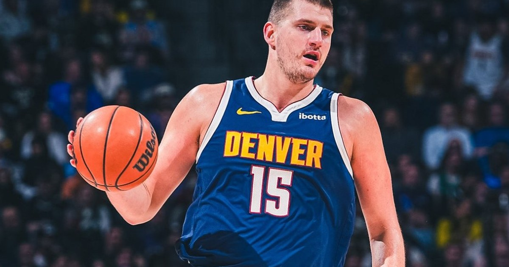

TSL Bets: Nikola Jokic OVER 25.5 points vs. Mavericks (-110)
Nikola Jokic just dropped 37-18-11 in Chicago, has scored 24+ in seven straight games, and faces a Dallas defense ranked 21st in the league. The play: Jokic OVER 25.5 points (-110, DraftKings) on Tuesday night.

The game slip
Dallas Mavericks (10-7) at Denver Nuggets (10-5)
Tuesday, 10:00 PM ET — Ball Arena, Denver, CO
• Spread: Nuggets -7.5
• Total: 233.5
• Moneyline: Nuggets -310 / Mavericks +251
• Odds source: ESPN, November 24
Injury report — Nuggets: No players listed on the injury report.
Injury report — Mavericks: C Dereck Lively II OUT (foot). F P.J. Washington day-to-day (illness). F Tobi Lawal OUT (groin). G Sergio de Larrea OUT (knee). F Tarik Biberovic OUT (heel).
Storylines: Jokic is in full MVP form: 37 points, 18 rebounds and 11 assists in Sunday's 151-145 overtime win at Chicago, his seventh straight game with 24+ points. He is averaging 27.0 points over his last 10 and has cleared 25.5 in 7 of those 10. Dallas ranks 21st in the league in defensive rating (115.6), and with Lively out the Mavericks have no rim protection to throw at him. The 233.5 total is the highest on tonight's three-game board — the market expects points, and Jokic is where Denver's points come from. On the other side, Cooper Flagg just scored 28 at Utah and Kyrie Irving averages 22.0 a game, so Dallas can keep this close enough for Jokic to play his full minutes.
The bet
Nikola Jokic OVER 25.5 points (-110, DraftKings)
Why this prop
The trend and the matchup point the same way. Jokic has cleared 25.5 in 7 of his last 10, is playing 38.7 minutes a game over his last five, and shoots 61.6% true shooting — more floor time usually turns into more points. Dallas is soft defensively (21st in the league), down its starting center, and playing the second night of a road trip after a win at Utah. At a near-even price, this is the props-first single by the book: a player prop with a real trend edge, a real matchup edge, and no chalk to pay.
The honest caveats
The line is high for a reason — Jokic's season average is 25.1, right on the number, and he has cleared 26.5 in only 4 of his last 10, so the 25.5 line is doing real work. Denver is a 7.5-point favorite, and if the Nuggets pull away early the fourth quarter belongs to the bench. Dallas also staggers Flagg and Irving, so the Mavericks can score in bunches and keep the game close — but that helps Jokic's minutes more than it hurts them. The edge is real, but it is an edge, not a lock.
The record
TSL Bets is 22-40 in November, 26-61 all-time.
If you or someone you know has a gambling problem, call 1-800-GAMBLER.
Sources
• Nikola Jokic Projections & Betting Odds (OPTIMAL — DraftKings -110)
• Best NBA Player Props Today: Prop Bet Predictions Tonight (Odds Index)
• Nikola Jokic Props & Odds: Mavericks vs Nuggets (Wise Guy Desk)
• Jokic's 37-point, 18-rebound, 11-assist night came in Denver's 151-145 overtime win at Chicago on Nov 22 (ESPN final boxscore).